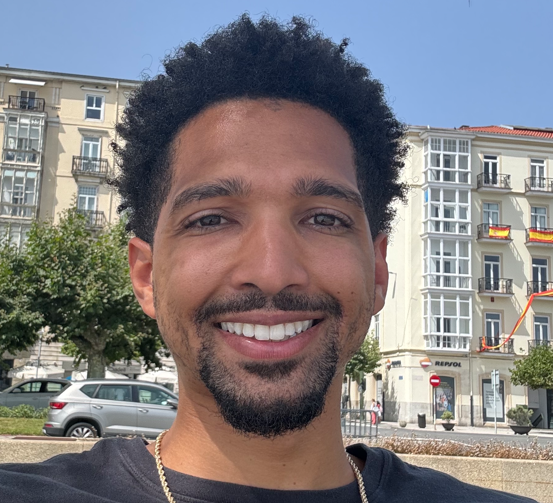

Tyler Sienko
Electronic Technician

Contact Information
Availabilty:
Job Type: Permanent
Work Schedule: Full Time
Desired Locations:
Japan Spain Bahrain
Professional Summary
Highly skilled US Navy-trained Electrician TechnicianSupervisor/Journeyman Electrician, TS/SCI Clearance, Mil-STD and Security+ Certified, with 7 years of hands-on
experience supporting the maintenance and repair of military-grade electronics. Extensive experience laying out, fabricating, and installing electrical wiring and coaxial cable.
Skilled in checking, testing, and troubleshooting electrical systems for conformance to specifications and performs repair, removal, and reinstallation of wiring as necessary.
Experience installing component connectors and electrical contacts in accordance with approved Installation Data Package (IDP). Military leadership experience gained
supervising and assisting 15 electronic and communication technicians in preventative and corrective maintenance on shipboard equipment. Additional military training includes
2M/Microelectronics, Information Systems Management, Satellite Deployable Nodes, Global Broadcast Systems, Data Link Communications, and Naval Special Warfare
Communications. Proven abilities include working with complex systems, collaborating, team building and mentoring for professional and personal development: Demonstrates
strong attention to detail and communication skills. Adaptable and able to excel in fast-paced, high-pressure environments. Trained in PPE, Hazmat, EMI, ESD, Cleanrooms, and
Tool Control.
Professional Experience
Commercial Broadband Satellite Program Technician
Centurum
July 2022-Present
Hours Per Week: 40
Duties and Responsibility:
- Performs Technical Sustainment Support (TSS), Sustainment Engineering (SE), Modernization Support (MS), Logistic
Support (LS), and other SATCOM Technical Support Service for the Commercial Broadband Satellite Program (CBSP):
AN/USC 69(V)1,2,3 surface and shore; and crypto and modems associated with the preceding systems.
- Provides CBSP Program of Record (POR) activities to include, but not limited to Pre-Installation Test Check-Out (PITCO),
System Operational Verification Test (SOVT), Pre-Installation Check-Out, Engineering/Field Changes, CASREP analysis
(entries in Information Technology Service Management ITSM), Technical Feedback Reports (TFBR), and
Engineering/Technical reviews
- Provides CONUS/OCONUS on-site technical assist visits and support to troubleshoot problems, evaluate, and resolve
electronic equipment issues, perform equipment testing to verify systems for full functionality, test, identify, and replace
failed components, and provide technical support for existing system lab assets and sites.
- Conducts Pre-Installation Test and Check Out (PITCO) Support Services.
- Assists with Pre-Installation Check Off (PICO) prior to installation.
- Provides onsite support for software installation, and system turnover processes to include pre-installation
production/assembly and testing/evaluation of systems, staging, and shipping of installation materials, on-site
installation and System Operational Verification Testing (SOVT), training, and operational cutover.
- Provide the status of assigned tasks via both prepared and oral briefings to Senior Navy Personnel.
Supervisor: Larry Minnick
Okay to contact this supervisor: Yes
Electronic Technician (SURTASS)
Leidos
USNS Able
March 2022 - June 2022
Hours Per Week: 84
Duties and Responsibility:
- Operation, maintenance and repair of electronic equipment such as Compact Low Frequency Active(CLFA)
Sonar Systems, Passive Towed Arrays, and Integrated Common Processor (ICP).
- Utilizing common and specialized tools in repair/maintenance of electro/mechanical equipment such as,
Test Equipment, Manufacturers' Manuals, Schematic Diagrams and Government Procedures.
- Preparation of all required oral and written reports including CASREPs, PIM data, and 1149s.
- Assisted higher level personnel in compiling data for reports, procedures and manuals and ensure proper
maintenance of records and logs.
- Performed collateral duties such as Lead Safety Supervisor during towed array ship evolutions and Repair
Parts Officer for management of receiving/distribution of ships equipment/parts.
- *Due to critical family emergency, my time with the the company was voluntarily terminated*
Supervisor: Jon Maas
Okay to contact this supervisor: No
PC Technician
Jacobs Technology
November 2021 - March 2022
Hours Per Week: 40
Duties and Responsibility:
- nstalling operating systems software, patches, and upgrades for WIN 10, WIN 7, and WIN XP per Naval
Instruction.
- Evaluating, troubleshooting, and resolving system hardware, software, and networking issues on
NIPR/SIPR/SOCRATES.
- Performing system backups, recovery, server builds for Naval Special Warfare Group 2.
- Provided Systems Administrator support to systems hosting complex operational databases, software
configuration control, and system interfaces for computer systems.
- Maintains and repair file servers, network access; documents, analyzes and troubleshoots systems anomalies
to ensure optimum equipment performance.
Supervisor: Justin Jones
Okay to contact this supervisor: Yes
Special Forces Electronic Technician Supervisor
U.S Navy
December 2020 - September 2021
Hours Per Week: 72
Duties and Responsibility:
- Supervised a team of four communicators with upgrading firmware and Voice Over Internet Protocol (VoIP)
phones increasing the connectivity, availability, and sustainability by 100%.
- Operated, maintained, and repaired vital tactical data and voice circuits utilizing HF/VHF/UHF/SHF/EHF
equipment in support of high-profile projects, resulting in a contribution to a 95% passing score for Trident
Assessment for SEAL TEAM 10 Troop 3.
- Joint Leader: As project manager and lead Information Technician (IT), led, trained, and guided 22
employees supporting 814 joint SOF personnel across 40 countries spanning three Geographic Combatant
Commands, sustaining 24/7 communications, help desk support and C5ISR redundancy during 125 Special
Operations missions worldwide.
- Operated, maintained and repaired Cisco related devices such as router/modem while utilizing security
protocols implemented by customer or local procedures.
- Created user and administrative accounts for SIPR/NIPR.
Supervisor: David Ortiz
Okay to contact this supervisor: Yes
Special Forces Electronic Technician Manager
U.S. Navy
March 2020 - December 2020
Hours Per Week: 72
Duties and Responsibility:
- Managed 65 personnel while supporting written and oral communication requirements Special Operation
Forces for SEAL TEAM 10 personnel.
- Directed and managed the development of several communication plans, programming radios, and 157
hours of -radio telephone operator tracking, resulted in zero communication downtime and 100% successful
completion of project evolution.
- Maintained 100% accountability of 700k dollars' worth of Controlled Cryptographic Item (CCI) equipment,
such as, AN/PRC-117G, AN/PRC-163, AN/PRC-160, AN/PRC-148, KG-250, SKL, TKL, Iridium Phones,
Riverjacks resulting in zero discrepancies.
- Sustained and inventoried multiple SIPR and NIPR laptops to ensure full network capability.
- Properly handled NIPR and SIPR drives per SOF/COMSEC instruction to enable redundancy for failed
configurations and regular operations.
Supervisor: David Ortiz
Okay to contact this supervisor: Yes
Special Forces Electronic Technician Specialist
U.S. Navy
December 2018 - March 2020
Hours Per Week: 72
Duties and Responsibility:
- Attended school for Cisco Networking Infrastructure, Satellite Deployable Nodes, and Naval Special
Warfare Communications.
- Obtained 501 Security + to qualify and sustain eligibility at SEAL TEAM 10.
- Gained proficiency in fabricating makeshift Antennas for High Frequency (HF), Very High Frequency
(VHF), and Ultra High Frequency (UHF) radios.
- Learned to construct Satellite Antennas to enable secure internet, along with a setup of a Cisco Network
Model to harness and distribute NIPR/SIPR/SOCRATES services securely.
- Utilized expertise in two Deployable Satellite Systems and associated Baseband equipment, resulting in
international network access for customers.
- Trained 20 personnel in the Expeditionary Warfare (EXW) program and five different Cryptographically
Controlled Items (CCI) to increase the team's knowledge, resulting in better oral and written communication
support for customers.
- Conducted and trained six personnel on inventory, resulting in successful sustainment of equipment for
future technicians with a consistent cycle of training.
Supervisor: David Ortiz
Okay to contact this supervisor: Yes
Combat Systems Electronics Department Supervisor
U.S. Navy
March 2018 - December 2018
Hours Per Week: 84
Duties and Responsibility:
- Directed 23 personnel in the preventative/corrective and repair/maintenance of all EXCOM, ICOM and
Radar/ Navigation equipment.
- Supervised the testing and evaluation of top priority Casualty Repairs (CASREPs).
- Tracked the completion of 152 board of Inspection and Survey (INSURV) jobs and supervised technicians
in completing 3,632 checks resulting in 89% passing rate per INSURV Certification.
- Led and trained 16 personnel of the Link Response Team resulting in DDG-54's 97% pass rate for the
Ballistic Missile Defense Exorcise (BMDEX) Certification.
- Revamped the Enlisted Surface Warfare System (ESWS), Combat System Officer of the Watch (CSOOW),
and 7 Ballistic Missile Defense (BMD) Technical Drill Study Guides.
- As primary Technical Drill Instructor, coordinated 140 hours of training in all Electronic Communications
Equipment, resulting in increased skill and knowledge expertise onboard.
- Repaired 42 2M miniature and microelectronics repairs, resulting in three Casualty Corrections including
SPY-1, Wave Off Guide Lights, Aft Steering Alarm, and Global Broadcast System (GBS), ensuring COMMS
1.4 Certification was passed with a 92%.
Supervisor: Jason Sarmiento
Okay to contact this supervisor: Yes
Combat Systems Electronic Technician Manager
U.S. Navy
June 2016 - March 2018
Hours Per Week: 84
Duties and Responsibility:
- Managed five personnel in the preventive/corrective maintenance and repair of exterior communications
suite. As well as issued and accounted for all test equipment onboard USS Curtis Wilbur (DDG-54).
- Prevented five Casualty Reports (CASREPs) and Cleared two CASREPs by repairing faults in the
Communications Suite such as: NMT (Navy Multi Band Terminal), WSC-3 (transceiver), and HFRG (High
Frequency Radio Group).
- Completed COMMS 1.1 Certification and Readiness for Sea Assessment (RFSA) requirements needed for
Naval Vessel to go on deployment.
- Oversaw 1,022 Preventive Maintenance System (PMS) checks resulting in a successful 2017 Selected
Restricted Availability (SRA), contributing to DDG-54 to be fully operational.
- As the primary Link Tech trained and contributed to personnel passing LINKEX, FST-J, C4I SAGET, and
ALO EXCOM with an overall 90% passing rate, enabling full capability of Tactical Data Links (TADILs) for
ship's communication.
- Revamped the test equipment program resulting in sustained 100% equipment accountability and passing
the Integrated Logistics Overhaul (ILO) Inspection with an outstanding score.
Supervisor: Jason Sarmiento
Okay to contact this supervisor: Yes
Combat Systems Electronic Technician
U.S. Navy
January 2016 - June 2016
Hours Per Week: 84
Duties and Responsibility:
- Conducted preventative and corrective maintenance of exterior electronic communication equipment.
Performed over 70 checks resulting in a passing rate of over 95% per 3M Certification.
- Restored SHF HPA (High Power Amplifier), which resolved a high priority CASREP for all communication
network communications via NIPRNET/SIPRNET/Phone services within a 24-hour period.
- Created Electronic Service Supervisor (ESS) troubleshooting SOPs (Standard Operating Procedures) for
communication, radar, and navigation electronic systems and equipment.
- As primary Link Technician, created five Link Response Team Drill Packages and binder outlining the most
common Link-16, Link-4A, Link-11, Command and Control Processor (C2P)/Common Data Link
Management System (CDLMS) faults.
- Being the most knowledgeable Electrician Technician, I increased the departments efficiency in oral
communication and resolving customer's request, through training and creating documents
Supervisor: Jason Sarmiento
Okay to contact this supervisor: Yes
Electronic Technician (Student)
U.S. Navy
December 2014 - December 2015
Hours Per Week: 60
Duties and Responsibility:
- Performed basic skills as a safety observer and how to use oral communication to respond appropriately to
basic safety emergencies. Lessons include CPR, First Aid & AED certifications, Rescuing a Shock Victim,
Inspect and Maintain Safety Board and Equipment, Climbing Basics to Perform Maintenance at Heights, and
Combatting Electrical Fires.
- Learned laws that govern the movement of electrons through a circuit. Along with the foundations of Direct
Current (DC), Alternating Current (AC), and the various components that make up basic electronic circuits.
Introduced to troubleshooting foundation, using various test equipment such as, multi-meters, function
generators, and oscilloscopes to troubleshoot and isolate faulted components.
- Familiarized with electromagnetic wave propagation, radio wave frequency spectrum, and where in that
spectrum Navy/Army radio systems fit.
- Learned basic nautical navigation concepts, as well as how to operate, sustain, troubleshoot, and repair a
RADAR, electronic chart display, Global Positioning System (GPS), depth sounder, and a vessel monitoring
system known as Automatic Identification System (AIS). Also learned testing and evaluation of faults
through multiple pieces of equipment.
- Learned soldering fundamentals, then use those skills to assemble/repair over a dozen different connectors
on multiple types of coaxial cables.
Key Skills
- Leader
- Trainer
- Team Building
- Organized
Certifications
- 501 Security+ CE
- Linux+ CE
- AWS Certified Cloud Practicioner
- A-101-0027, IAMD C4I SAGT
- S-221-0057, LINK RESPONSE TT
- A-100-0076, AN/USM-674 OPERATOR/MAINTAINER
- A-100-0073, MICRO ELECT REP
- A-100-0072, Miniature Electronics Repair
- A-101-0148, Data Link Communication System Maintenance Technician (DLCSMT)
- A-100-0092, ET COMBINED 'A' SCHOOL (BLOCK 0)
- SDN-25
- SDN-07
- SDN-13
References